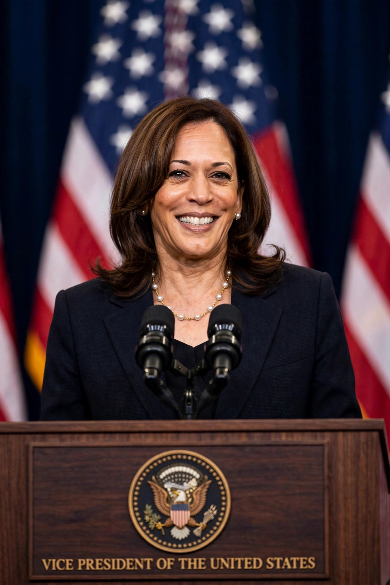

Kamala Devi Harris (born October 20, 1964) is an American politician and attorney who served as the 49th vice president of the United States from 2021 to 2025 under President Joe Biden. She was the Democratic nominee for president in the 2024 election, which she lost to Donald Trump. Harris is the first woman, first African American, and first Asian American to hold the vice presidency.

| Kamala Harris | |
|---|---|
| Vice President | 2021–2025 |
| Born | October 20, 1964, Oakland, California |
| Party | Democratic |
| Spouse | Doug Emhoff |
| Education | Howard University; UC Hastings |
Born in Oakland, California, to a Jamaican economist father, Donald Harris, and an Indian cancer researcher mother, Shyamala Gopalan, Harris was raised in Berkeley and Montreal. She graduated from Howard University and the University of California, Hastings College of the Law. She served as district attorney of San Francisco (2004–2011) and attorney general of California (2011–2017).
Harris was elected to the U.S. Senate in 2016. She sought the 2020 Democratic presidential nomination before Biden selected her as his running mate. As vice president she cast a record number of tie-breaking votes in the Senate and led diplomatic and policy work on migration, voting rights, and abortion rights following the overturning of Roe v. Wade.
After Biden withdrew from the 2024 race in July 2024, Harris quickly secured the Democratic nomination, chose Minnesota Governor Tim Walz as her running mate, and lost the general election to Trump in November 2024.